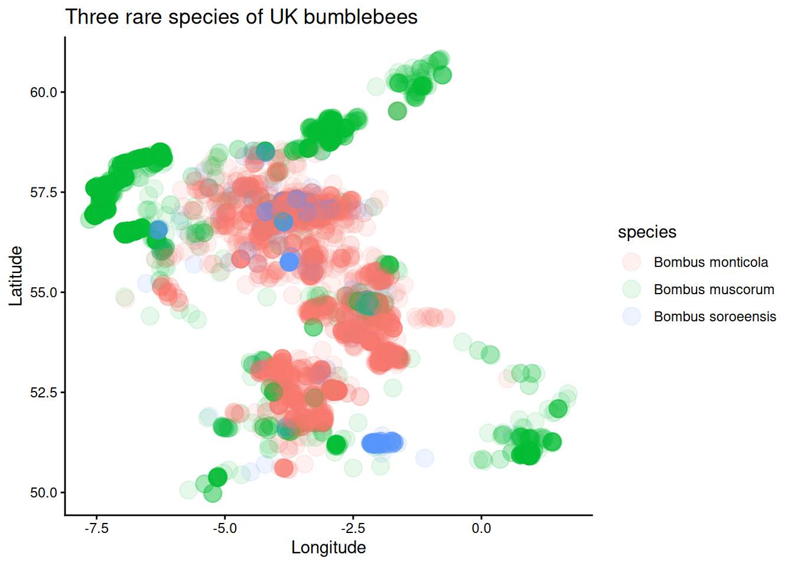
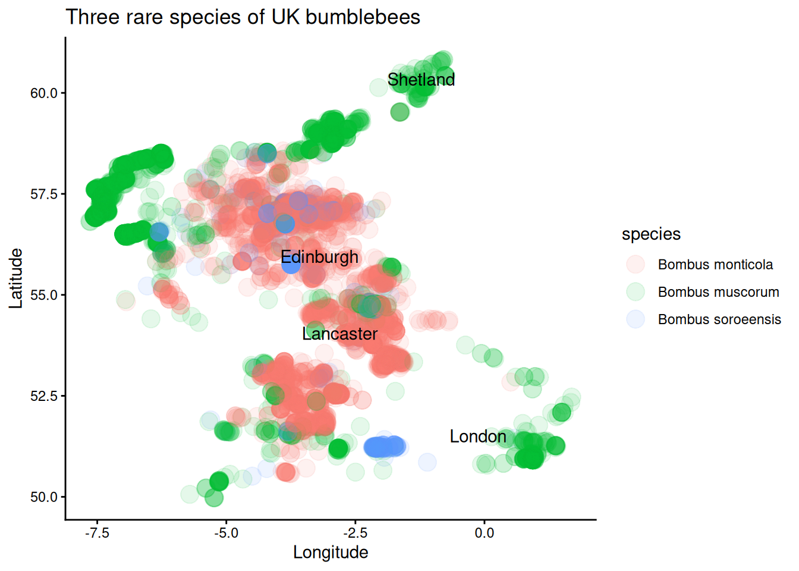
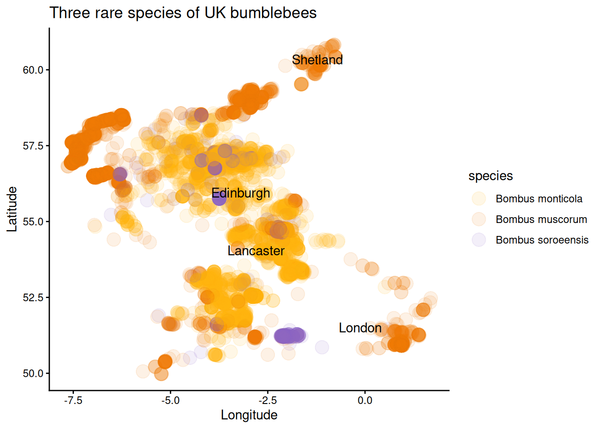
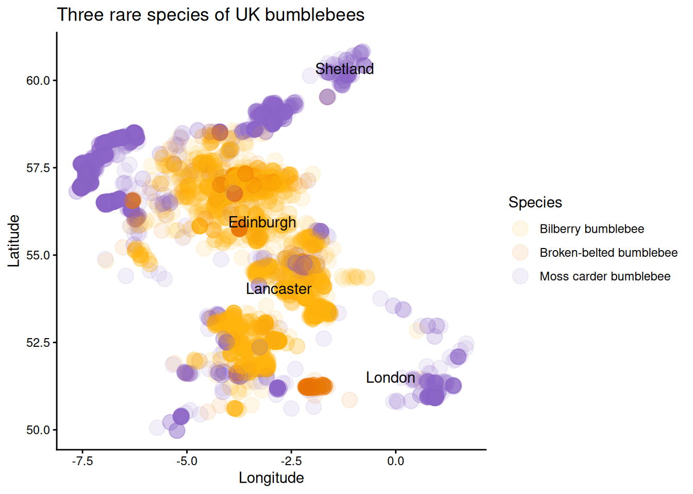

27 Geographic patterns
We’ll start by looking at the large-scale geographic patterns.
27.0.1 A basic plot
Start by making a basic scatter plot using ggplot(), with:
- longitude on the x-axis
- latitude on the y-axis
- the point colour indicating species
Tip! Remember that if colour is determined by a variable, the colour argument it has to go inside the aes() function!
You will probably want to make the size of the points larger with size = and the points somewhat transparent with alpha = (where alpha = 0 is full transparent and alpha = 1 is fully opaque).
You can also add some nicer axis labels and a title.

27.0.2 Create your own data frame manually
It would be nice to get a better sense of where a few locations are to orient us, particularly since we don’t have an outline of the UK.
We can do that by creating our own data frame with latitude and longitude coordinates.
To create your own data frame by hand, you use the data.frame() function. Inside
- Each column is its own argument (e.g.
col_name = ...) - The values for each column are provided inside a vector (e.g.
c(x, y, z, ...))
The code below provides coordinates for Lancaster, London, Edinburgh, and Shetland. (I recommend typing out the overall structure to help yourself learn, but copying and pasting the coordinates.)
landmarks_df <- data.frame(location = c("Lancaster", "London", "Edinburgh", "Shetland"),
lat = c(54.048622, 51.510756, 55.951889, 60.339666),
long = c(-2.800306, -0.122915, -3.198884, -1.224915))Now we can add a geom_text() layer to our ggplot figure.
We will need to specify separate data = and aesthetic (aes()) arguments since this layer is using a different data frame and different x and y variables than the rest of the figure.
The label = argument tells R what variable with character values to print as text.

27.0.3 Update colours
Change the colours to a colour palette that you like better.
You will need to add another layer with the scale_colour_manual() function.
The scale_colour_manual() function needs an argument (values =) with the colours provided as a vector.
Inside the function, you need to create a vector with three different colours, either specified by name or by hexidecimal code. You can also look at existing colour palettes.

27.0.4 Add common names
It would also be nice if we could put the common name in the legend instead of the scientific name.
We can add a new column - common_name - with the mutate() function.
The code below uses case_match() to create new values for a common_name column based on the existing values in the species column.
mydf <- mydf |>
mutate(common_name = case_match(
species,
"Bombus monticola" ~ "Bilberry bumblebee",
"Bombus soroeensis" ~ "Broken-belted bumblebee",
"Bombus muscorum" ~ "Moss carder bumblebee"))Change your figure to use the common names variable instead.
Tip!
When you change the colour-determining variable from species to common_name, you will also want to change the legend label to something that is properly formatted.
You do this by adding colour = "Whatever text label you want" to the labs() function.

Question:
Which geographic areas are each species of bee most commonly found in?